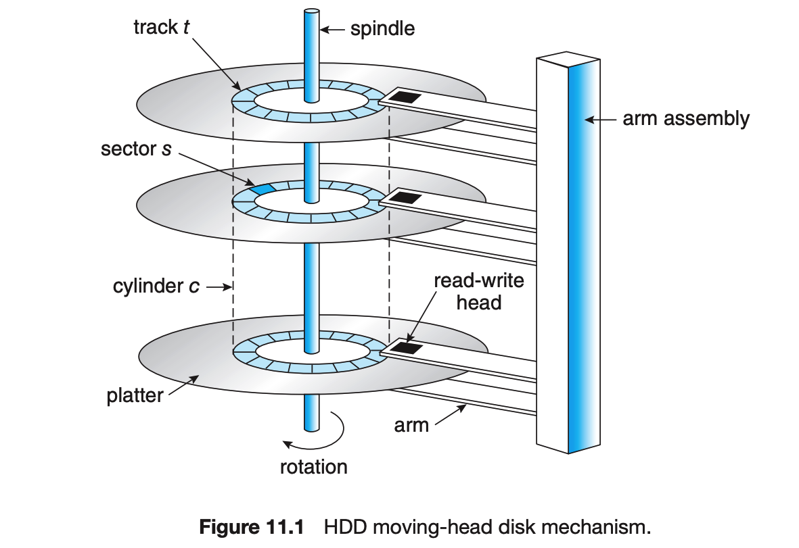
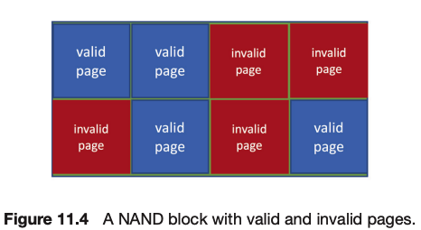

Mass-storage structures are essential components of modern computer systems, providing large-scale, nonvolatile storage capabilities. This section outlines the basic mechanisms and characteristics of various mass-storage devices.
Primary Storage Devices: The section introduces hard disk drives (HDDs) and nonvolatile memory (NVM) devices as the primary sources of secondary storage in computer systems.
HDDs and NVM Devices: HDDs are described as mechanical devices using magnetic storage principles, while NVM devices, such as flash memory and solid-state drives (SSDs), are electrical and offer different performance characteristics and reliability considerations.
Magnetic Tapes: Although less common, magnetic tapes are also discussed as a form of secondary storage, primarily used for backup and archiving due to their large storage capacity but slower access times.
Performance Characteristics: The section emphasizes the performance characteristics of these storage devices, such as data transfer rates, seek times, and rotational latencies, especially in the context of HDDs.
Storage Device Management: The chapter also touches upon operating system services provided for mass storage, including RAID (Redundant Array of Independent Disks) for data redundancy and improved performance.
Understanding mass-storage structures is crucial for efficient data management and retrieval in computer systems, significantly impacting system performance and reliability.
Hard Disk Drives (HDDs) are a crucial component in computer systems, serving as the primary medium for secondary storage. This section explains their structure, functioning, and performance characteristics.

Basic Structure: HDDs consist of one or more flat, circular platters, typically made of a magnetic material. Each platter's surface is divided into circular tracks, further subdivided into sectors. These sectors are the smallest units of data transfer.
Read-Write Heads: Each platter surface has a corresponding read-write head that "flies" just above it. These heads are attached to a disk arm, moving all heads as a unit across the platter surfaces.
Cylinders and Sectors: The tracks at a given arm position across all platters form a cylinder. The cylinder comprises thousands of tracks, and each track contains hundreds of sectors.
Performance Aspects: HDD performance is determined by rotation speed (measured in RPM), data transfer rate, seek time (time to move the disk arm to the desired cylinder), and rotational latency (time for the desired sector to rotate to the disk head).
Capacity and Speed: HDDs have storage capacities measured in gigabytes and terabytes, with common sector sizes transitioning from 512 bytes to 4KB around 2010. Their performance is enhanced by DRAM buffers in the drive controller.
Head Crashes: A major risk in HDDs is a head crash, where the disk head damages the magnetic surface, often leading to data loss unless backed up or RAID protected.
HDDs remain a fundamental technology in mass-storage, owing to their capacity and cost-effectiveness, despite the risks and mechanical limitations.
Nonvolatile Memory (NVM) devices are increasingly significant in computer systems, offering distinct advantages and functionalities compared to traditional mechanical storage devices like HDDs.
Characteristics of NVM Devices: NVM devices, such as flash NAND semiconductor chips, store data electrically rather than mechanically. Common forms include solid-state drives (SSDs), USB drives, and DRAM sticks with battery backing.
Advantages Over HDDs: NVM devices have no moving parts, making them more reliable than HDDs. They also offer faster access due to the absence of seek time or rotational latency and are more energy-efficient.
Performance Considerations: While NVM devices are faster and consume less power than HDDs, they are generally more expensive per megabyte and have lower storage capacities compared to larger HDDs. However, the gap is narrowing as NVM technology advances.
Wear and Lifespan: NAND flash memory deteriorates with each erase cycle, and its lifespan is measured in Drive Writes Per Day (DWPD). Special algorithms are used to evenly distribute wear across the device, extending its overall lifespan.
Data Protection: Similar to HDDs, NVM devices employ error-correcting codes for data integrity. However, they are still prone to catastrophic failures, which can be mitigated using RAID protection.
Increasing Use and Importance: The use of NVM devices is growing due to their speed and efficiency, leading to their adoption in various forms, including as primary storage in smartphones and laptops.
NVM devices represent a crucial evolution in storage technology, offering speed, reliability, and energy efficiency, albeit at a higher cost and lower capacity than traditional HDDs.
Nonvolatile memory (NVM) devices, such as solid-state drives (SSDs) and flash memory, play an increasingly important role in data storage, offering several advantages over traditional mechanical hard drives.
Flash-Memory-Based NVM: Flash-memory-based NVM is commonly used in several formats, including SSDs, USB drives, and DRAM sticks. SSDs, in particular, are used in a disk-drive-like container and have become prevalent as the main storage in laptops and other portable devices.
Versatility and Form Factors: NVM can take various forms, from surface-mounted devices on motherboards to portable USB drives, offering flexibility in usage and integration into different systems.
Reliability and Performance: Due to their electrical nature and lack of moving parts, NVM devices are more reliable and faster than mechanical HDDs. They provide quicker access with no seek time or rotational latency and are more energy-efficient.
Cost and Capacity: While NVM devices are generally more expensive per megabyte and have lower storage capacities compared to HDDs, the gap is narrowing as the technology advances, leading to increased usage in various computing devices.
Other NVM Technologies: Besides flash memory, other NVM technologies like DRAM with battery backing and 3D XPoint are mentioned, although they are less common compared to flash NAND semiconductor chips.
NVM devices, particularly flash memory, represent a significant shift in storage technology, offering speed, reliability, and efficiency, making them increasingly popular in modern computing environments.
NAND (not AND) flash memory controllers use specialized algorithms to manage data storage and retrieval, addressing the unique characteristics and limitations of NAND flash memory.
Write and Erase Operations: NAND flash memory can be read and written in 'page' increments but cannot be overwritten directly. Instead, the cells must be erased before being rewritten. Erase operations occur in 'block' increments, which are larger than pages, and are slower than read or write operations.
Wear Leveling: NAND cells deteriorate with each erase cycle. To extend the device's lifespan, controllers use wear-leveling algorithms to evenly distribute write and erase cycles across the memory cells, preventing certain areas from wearing out prematurely.
Flash Translation Layer (FTL): The FTL is a critical component that maps logical block addresses used by the operating system to physical block addresses in NAND flash memory. This layer handles the intricacies of managing invalid and valid data pages within NAND blocks.
Invalid Data: Due to the way erasure works, there exists old data that is not erased. Say we allocate 10 bytes for file A, and then we overwrite file A with file B. If file B is 6 bytes, we erase the first 6 bytes of file A (as this needs to be done first) then write file B overtop. The last 4 bytes of file A are "stale" or invalid data. Think of them like a Linked List with no head.
Garbage Collection: When NAND memory is full, and a write request is received, garbage collection is performed if necessary. This process involves moving valid data from blocks with invalid data to other blocks, freeing up space for new write operations.
Error-Correcting Codes (ECC): Like HDDs, NAND flash devices use ECC for data integrity. ECC detects and corrects errors that may occur during data storage and retrieval.
Handling Invalid Data: Over time, as data is rewritten, NAND blocks will contain a mix of invalid and valid data. The FTL and garbage collection algorithms work together to manage these blocks, ensuring efficient use of storage space.

These controller algorithms are essential for optimizing the performance and reliability of NAND flash memory devices, addressing challenges such as wear leveling, error correction, and efficient space utilization.
While typically not categorized as mass-storage, volatile memory, especially Dynamic Random-Access Memory (DRAM), plays a unique role in storage systems, particularly in the form of RAM drives.
RAM Drives: RAM drives, also known as RAM disks, are created by device drivers that allocate a section of the system's DRAM and present it as a storage device. They can be used as raw block devices or more commonly, with file systems for standard file operations.
Use of DRAM for Storage: Despite being volatile (losing data upon power off or system crash), DRAM is used for temporary data storage due to its high speed. It is faster than traditional storage media, making it suitable for specific high-speed storage needs.
Caching and Buffering: DRAM is already used in computers for buffering and caching, but RAM drives provide an additional layer where the user or programmer can explicitly store data temporarily.
Advantages: The primary advantage of using RAM drives is their speed. Operations on RAM drives are significantly faster than on traditional storage devices, useful for applications requiring rapid read/write operations.
Limitations: The major limitation of RAM drives is their volatility. Data stored on them is not persistent and is lost in case of a system crash or shutdown, making them unsuitable for long-term storage.
The use of volatile memory as a form of temporary mass-storage, though not common, exemplifies the adaptability of storage technologies to meet specific performance needs in computing systems.
Secondary storage devices are connected to a computer through various types of buses and interfaces. This section outlines the common methods and technologies used for this purpose.
System and I/O Buses: Secondary storage devices are typically attached to the computer via the system bus or an I/O bus. These buses facilitate data transfer between the storage device and the computer's processor and memory.
Common Bus Types: Various bus types are used, including Advanced Technology Attachment (ATA), Serial ATA (SATA), eSATA, Serial Attached SCSI (SAS), Universal Serial Bus (USB), and Fibre Channel (FC). The choice depends on factors like data transfer rate, cable length, and device type.
SATA and eSATA: SATA is a standard interface for connecting storage devices like hard drives and SSDs. eSATA (external SATA) is used for external devices, offering higher speeds than traditional USB connections.
SAS and SCSI: Serial Attached SCSI is a point-to-point serial protocol used for SCSI devices. It is known for its high speed and reliability, often used in enterprise environments.
USB and FireWire: USB is a common interface for connecting various peripheral devices, including storage devices. FireWire is another method, known for its high transfer rates and daisy-chaining capabilities.
Fibre Channel: Fibre Channel is a high-speed network technology primarily used for storage networking. It is known for its high data transfer rates and is often used in storage area networks (SANs).
The choice of connection method for secondary storage devices is crucial, as it directly impacts data transfer rates, device compatibility, and overall system performance.
Hard Disk Drive (HDD) scheduling is a crucial aspect of operating system performance, focusing on minimizing access time and maximizing data transfer bandwidth for mechanical storage devices.
Importance of HDD Scheduling: Efficient scheduling of HDDs involves optimizing access time, which includes both the seek time (time to move the heads to the cylinder containing the desired sector) and rotational latency (additional time for the platter to rotate to the correct position).
Seek Time and Rotational Latency: Seek time and rotational latency are significant factors in HDD performance. Scheduling algorithms aim to minimize the head movement across the platters, reducing the overall seek time.
Impact of Mechanical Nature: The mechanical nature of HDDs, with moving parts like read/write heads and spinning platters, makes optimizing these components critical for overall performance.
Role of Operating System: The operating system plays a key role in HDD scheduling by efficiently managing the queue of requests and optimizing the order of service to minimize head movements and maximize throughput.
Scheduling Algorithms: Various disk-scheduling algorithms are used, including First-Come, First-Served (FCFS), SCAN, and C-SCAN. Each algorithm has its trade-offs and is chosen based on specific performance goals and the nature of disk access patterns.
HDD scheduling is essential for achieving high performance in systems that rely on mechanical storage devices, balancing the need for quick access with efficient utilization of the disk's mechanical movements.
The First-Come, First-Served (FCFS) scheduling algorithm is a simple and fair approach used in the management of HDD operations.
Basic Principle: In FCFS scheduling, disk requests are processed in the order they arrive. The disk head moves to the location of each request sequentially, regardless of the physical location of the data on the disk.
Implementation: FCFS is easy to implement, typically managed with a FIFO (First-In, First-Out) queue. Requests are added to the queue as they arrive and processed in that order.
Fairness: This algorithm is intrinsically fair because every request is served in the order it arrives, with no preference given to any particular request.
Performance Aspects: While fair, FCFS may not provide the fastest service. For example, if the disk head is at cylinder 53 and the request queue is [98, 183, 37, 122, 14, 124, 65, 67], the total head movement will be significant as it processes each request in order.
Disadvantages: FCFS can lead to long waiting times, especially for requests that arrive just after the head has moved away from their locations. This inefficiency is known as the "convoy effect."
Applicability: FCFS scheduling is suitable in environments with light disk load, where the simplicity of the algorithm outweighs its lack of optimization in seek times.
Although FCFS is a straightforward and equitable disk scheduling method, it is not the most efficient in terms of head movement and overall disk performance, particularly in systems with heavy disk usage.
The SCAN algorithm, commonly known as the elevator algorithm, is an HDD scheduling method that aims to reduce the average seek time compared to simpler methods like FCFS.
Operating Mechanism: In SCAN scheduling, the disk arm starts at one end of the disk and moves toward the other end, servicing requests as it reaches each cylinder. Upon reaching the other end, the direction of the head movement is reversed, and servicing continues. This back-and-forth motion resembles the movement of an elevator, hence the name.
Example: For a series of requests (e.g., [98, 183, 37, 122, 14, 124, 65, 67]) with the initial head position at cylinder 53, SCAN would service the requests in a sequential manner as the head moves in a single direction. After reaching one end of the disk, it reverses the direction to service requests on the return path.
Advantages: SCAN provides a more uniform wait time compared to FCFS, as it reduces the possibility of starvation for requests. It also minimizes large swings in head movement, leading to more efficient scheduling.
Limitations: While more efficient than FCFS, SCAN may still lead to increased wait times for some requests, especially those just missed by the disk arm as it reverses direction at the ends of the disk.
Usage Context: SCAN is well-suited for systems where requests are spread relatively evenly across the disk. It is less effective in situations where requests are heavily concentrated in a specific area of the disk.
SCAN scheduling is a significant improvement over simpler disk scheduling algorithms, offering a balance between fairness and efficiency, especially in environments with a moderate to high load on the disk.
Circular SCAN (C-SCAN) scheduling is a variant of the SCAN disk scheduling algorithm, designed to provide a more uniform wait time for requests.
Operation Method: Similar to SCAN, C-SCAN moves the disk arm from one end of the disk to the other, servicing requests along the way. However, when the arm reaches the other end, it immediately returns to the beginning of the disk without servicing any requests on the return trip.
Uniform Wait Times: C-SCAN treats the cylinders as a circular list that wraps around from the final cylinder to the first one. This approach helps to maintain more uniform wait times for requests in all areas of the disk.
Example: Using the same request sequence as before (e.g., [98, 183, 37, 122, 14, 124, 65, 67]) with the initial head position at cylinder 53, C-SCAN would service the requests in one direction only. Once it reaches the end, it quickly returns to the start and continues processing requests.
Advantages: This scheduling method reduces the time requests at the beginning of the disk have to wait after the head has moved to the other end, ensuring that no part of the disk suffers from long wait times.
Limitations: While C-SCAN provides more uniform wait times, it may result in longer overall head movement compared to SCAN, especially in cases where there are few requests at the extremes of the disk.
C-SCAN scheduling is effective in systems where maintaining uniform access times across the entire disk is more important than minimizing the total head movement.
Choosing the right disk-scheduling algorithm is crucial for optimizing disk performance and depends on various factors, including the workload and characteristics of the disk requests.
Factors Affecting Choice: The selection of a disk-scheduling algorithm depends on the number and types of requests. For instance, in a scenario with only one outstanding request, all algorithms behave similarly, akin to FCFS.
Performance Considerations: Algorithms like SCAN and C-SCAN are more effective for systems with heavy disk usage as they reduce the likelihood of starvation problems. The overall performance of these algorithms is influenced by the distribution and frequency of disk requests.
Algorithm Efficiency: While an optimal retrieval order can be defined for a specific set of requests, the computational effort to find such an order may not justify the performance improvement over more standard algorithms like SCAN.
Starvation and Fairness: Some disk-scheduling algorithms can lead to starvation, where certain requests are delayed excessively. Therefore, balancing efficiency with fairness is an important consideration in the selection process.
Context-Dependent Decision: The best scheduling algorithm may vary depending on the specific usage scenario. For example, algorithms that perform well in an environment with sequential I/O requests might not be as effective with random I/O patterns.
The choice of a disk-scheduling algorithm is a strategic decision that must consider various factors, including the nature of the disk load and the goal of achieving high throughput while minimizing response time and avoiding starvation.